CAD Cutout Library (FreeCAD)
Status: verified in FreeCAD 1.1.1. CAD tooling (D8) is still open, so this is an internal reference page. Once D8 lands it gets promoted into
docs/hardware/cad-workflow.md.
Draw each control's cutout once, in a small library file, and link it into every panel that uses it. Edit the library and every panel picks up the change. Each control in a panel can still be moved and rotated on its own. For rows of identical controls that never rotate, such as LEDs, see Array placement.
The screenshots below come from a small demo built for this page: a Toggle12-style library part and a 100 × 50 mm BackPlate with two controls, SW1 and SW2. SW2 is rotated 90°.
How the pieces fit
CAD/Shared/Cutouts/Toggle12.FCStd ← library part (one file per part)
└── Body
├── FacePlate (sketch: Ø12.6 hole)
└── BackPlate (sketch: Ø12.6 hole + anti-rotation tab)
<panel>.FCStd ← the panel
├── Panel Blank (group)
│ └── ControlPoints (sketch: one point per control)
├── Controls (group)
│ ├── SW1 (LCS on ControlPoints:Vertex1)
│ └── SW2 (LCS on ControlPoints:Vertex2, rotated 90°)
├── FrontPlate (Body)
│ └── … SW1_Face (binder → FacePlate) → Pocket, SW2_Face → Pocket
└── BackPlate (Body)
└── … SW1_Back (binder → BackPlate) → Pocket, SW2_Back → Pocket
- ControlPoints: the where. One plain sketch point per control. Move a point and the control moves on every plate.
- One LCS per control: the which way. A Local Coordinate System is pinned to its
point and carries that control's rotation. The LCS label is the KiCad reference (
SW1). - One Sub-Shape Binder per control per plate layer: a live, cross-file copy of the library sketch for that layer, placed by the control's LCS.
- Pocket the binder directly (Through all, Symmetric). You don't need an External-Geometry cut sketch.
The library holds one sketch per layer, because the plates need different holes. In Toggle12, for example, the BackPlate layer carries the anti-rotation tab and the FacePlate layer doesn't.
Library conventions
| Rule | Why |
|---|---|
| One file per part, one Body, one sketch per plate layer | Binders link to a sketch by name, so each layer must be its own sketch |
Label sketches by layer: FacePlate, BackPlate |
Tells you which binder points where |
| Centre the cutout on the sketch origin (0,0) | The LCS places the origin, so (0,0) is the control's centre |
| Edit sketches in place: never delete and recreate them | The binder links to the sketch's internal name. A recreated sketch breaks every panel |
| Save the library in its final folder before linking it | Links store a relative path. Moving the file later breaks them |
Panel conventions
| Rule | Why |
|---|---|
| ControlPoints uses ordinary (non-construction) points | The LCS attaches to Sketch:VertexN |
| Never delete and re-add points in ControlPoints. Move them instead | The LCS binds by vertex index, so deleting a point renumbers the rest |
LCS label = KiCad reference (SW1, S3, …) |
Ties CAD to schematic and firmware |
Keep the LCSs in a Controls group |
Keeps the tree tidy when there are dozens |
| Save the panel in its final folder before creating binders | Same relative-path reason as the library |
Recipe
1. Library part
- New file, saved in
CAD/Shared/Cutouts/(e.g.Toggle12.FCStd). - Part Design → Create body, then one sketch per layer on the XY plane.
- Draw each layer's cutout, centred on the origin. Rename the sketches
FacePlateandBackPlate. - Save.
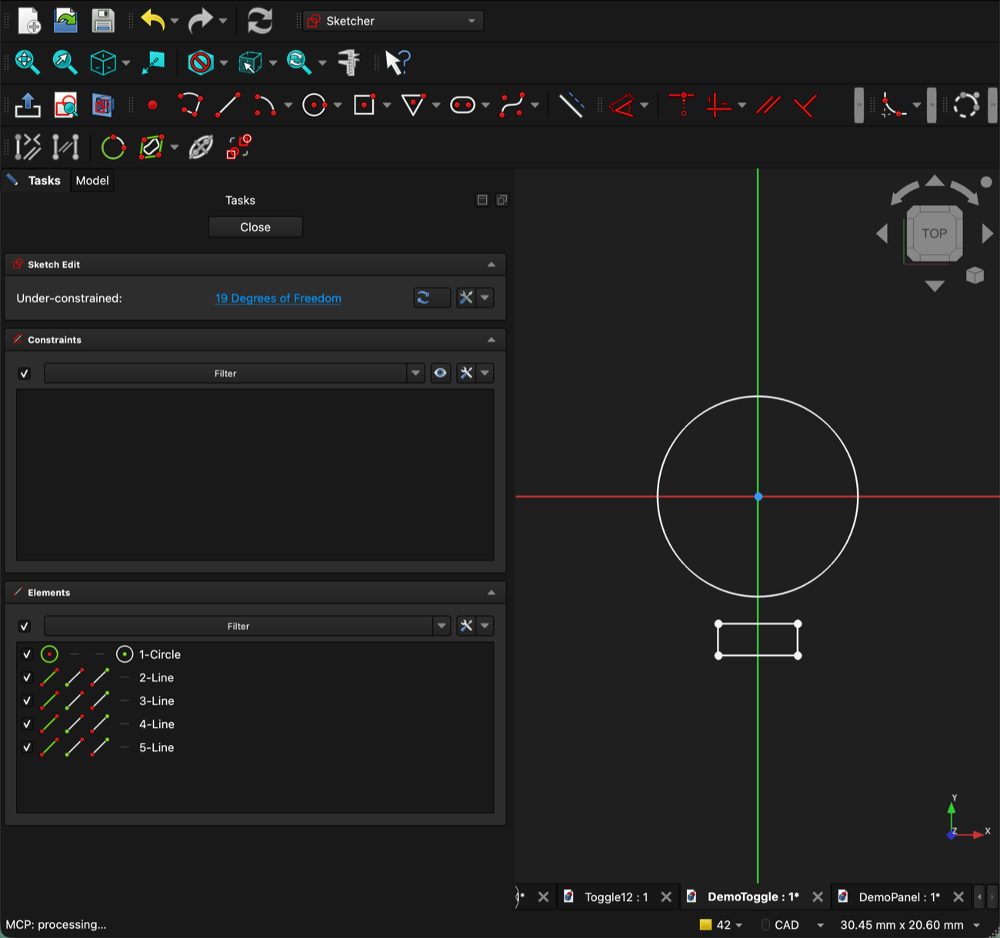
2. Control positions
- In the panel, open the
ControlPointssketch (Sketcher workbench). - Add one Point per control and dimension it from the origin.
- Close the sketch.
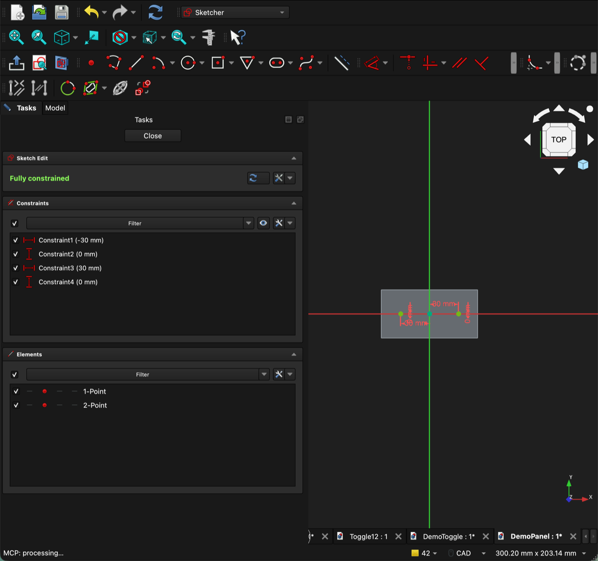
3. One LCS per control
- Select nothing. Then Part (or Part Design) → Create datum → Coordinate system.
- In the attachment panel, type the reference into the field:
Sketch:Vertex1(useControlPoints' internal name, shown in the tooltip; it's usuallySketch). - Attachment mode: Translate origin. OK.
- Rename it to the KiCad reference (
SW1) and drag it into theControlsgroup. - To rotate the control: edit SW1 again (double-click it) and set Around Z-axis under Attachment Offset.
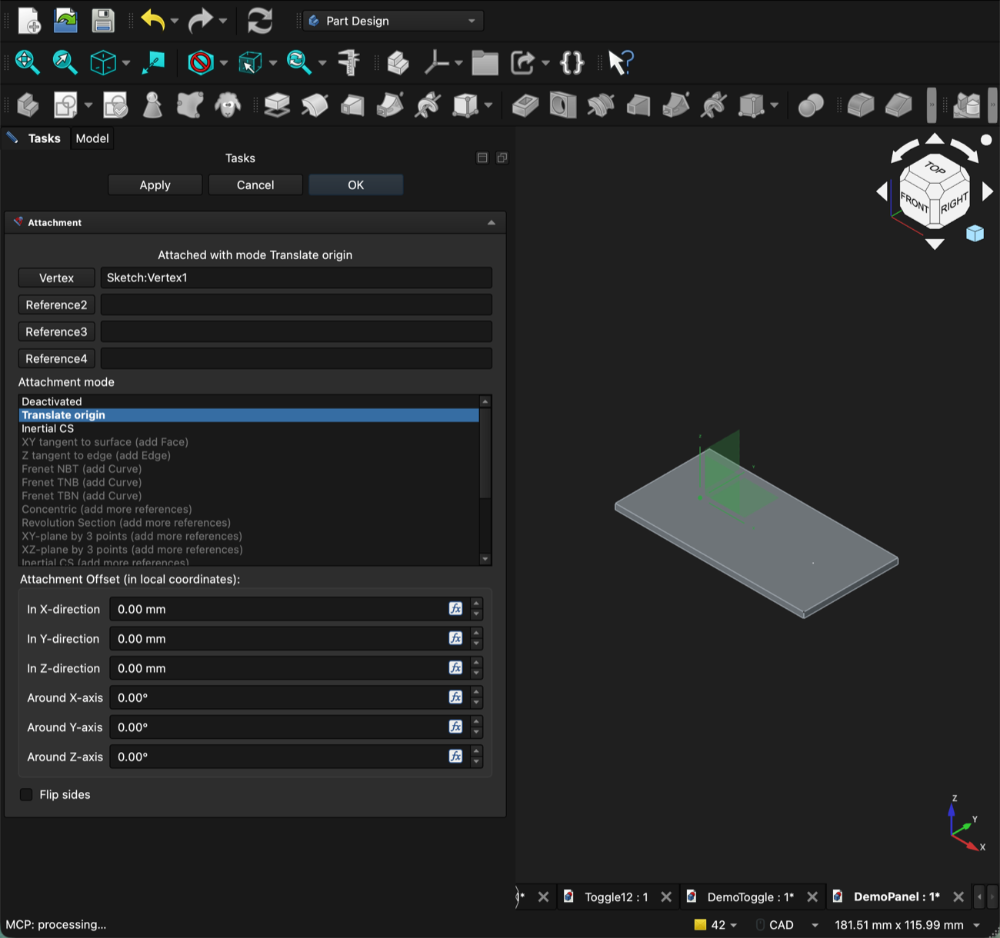
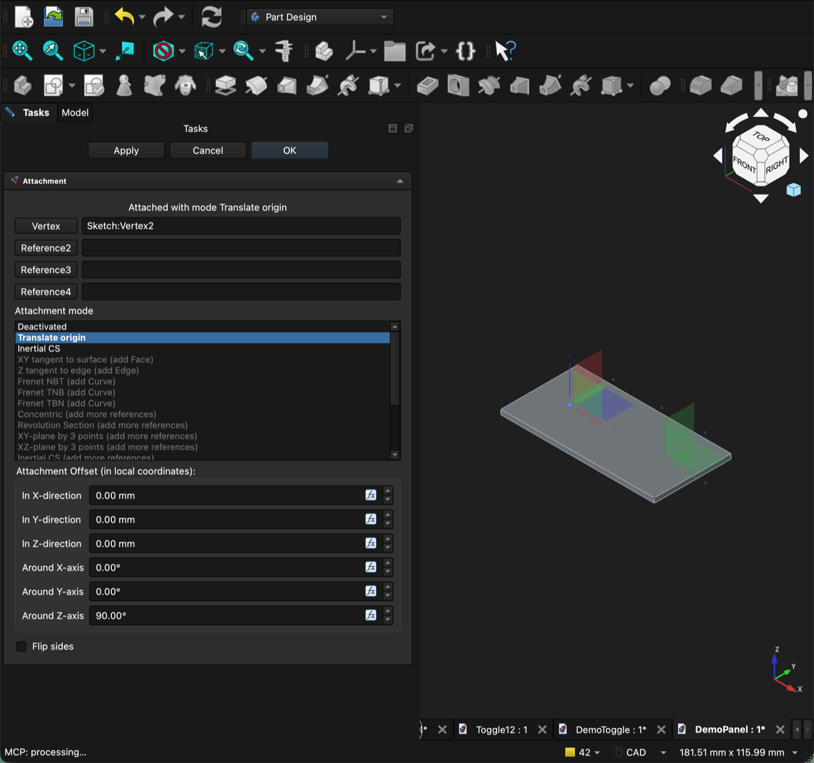
4. Bind and cut (per control, per plate)
- Make the panel the active document. Double-click the plate Body (e.g. FrontPlate) so it's active, and select nothing.
- Part Design → Create a sub-object(s) shape binder. An empty binder appears inside the body.
- In the tree, drag the library's layer sketch (
FacePlateorBackPlate) onto the new binder. Both documents appear in the same tree.
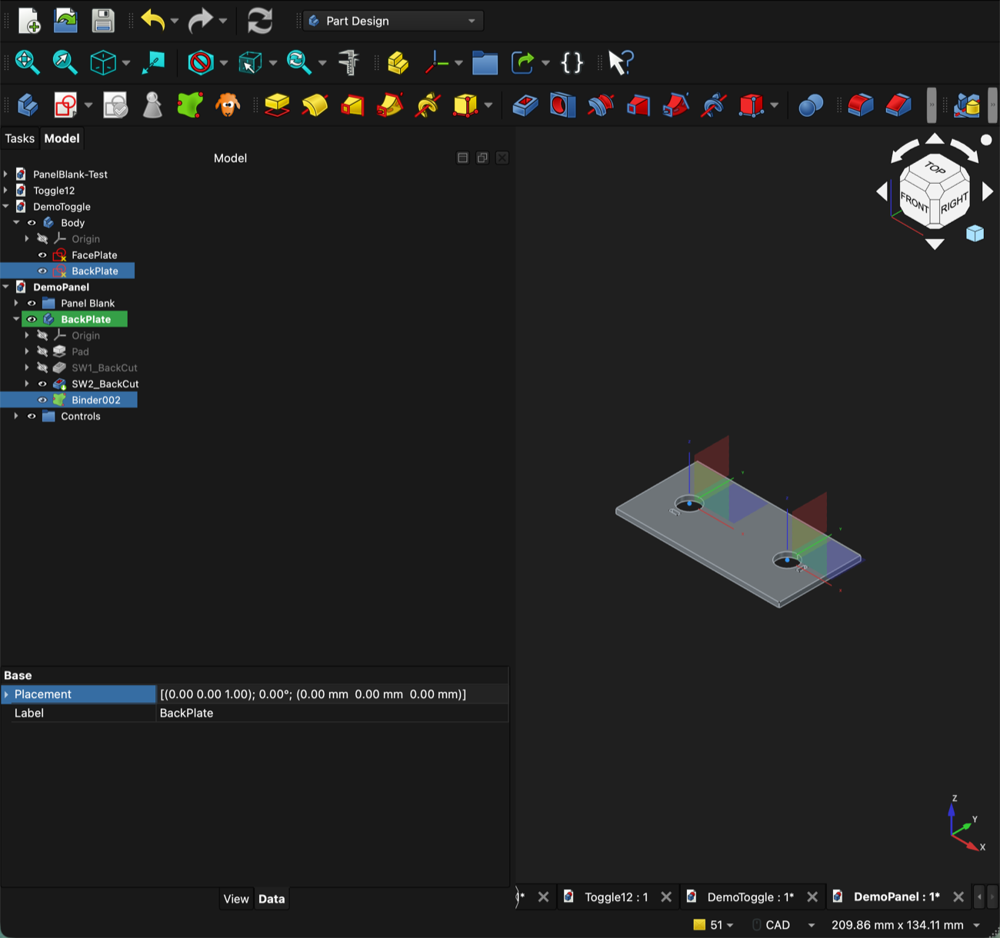
- Select the binder → Property view → right-click Placement → Expression… and enter:
placement(SW1.Placement.Base; SW1.AttachmentOffset.Rotation)
Use the LCS's internal Name, which may be LCS or LCS001 and not the SW1
label. When it works, Support shows the library sketch and Placement turns blue,
which means it's driven by the expression.
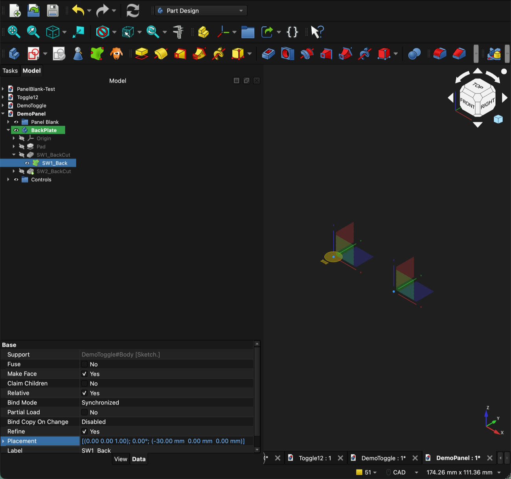
5. With the binder selected, run Pocket: set Mode to Symmetric and Type to Through all. OK.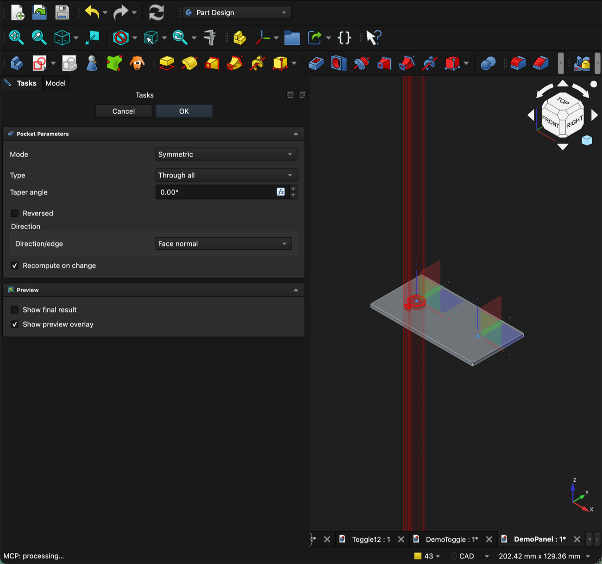
6. Rename the binderSW1_Face (or SW1_Back on the BackPlate).
7. Save. When you're asked "Save dependent files?", answer No unless you edited the
library on purpose.
Repeat for the other plate layer. In the result below, SW2 is rotated 90°: its tab sits to the side, while SW1's points down.
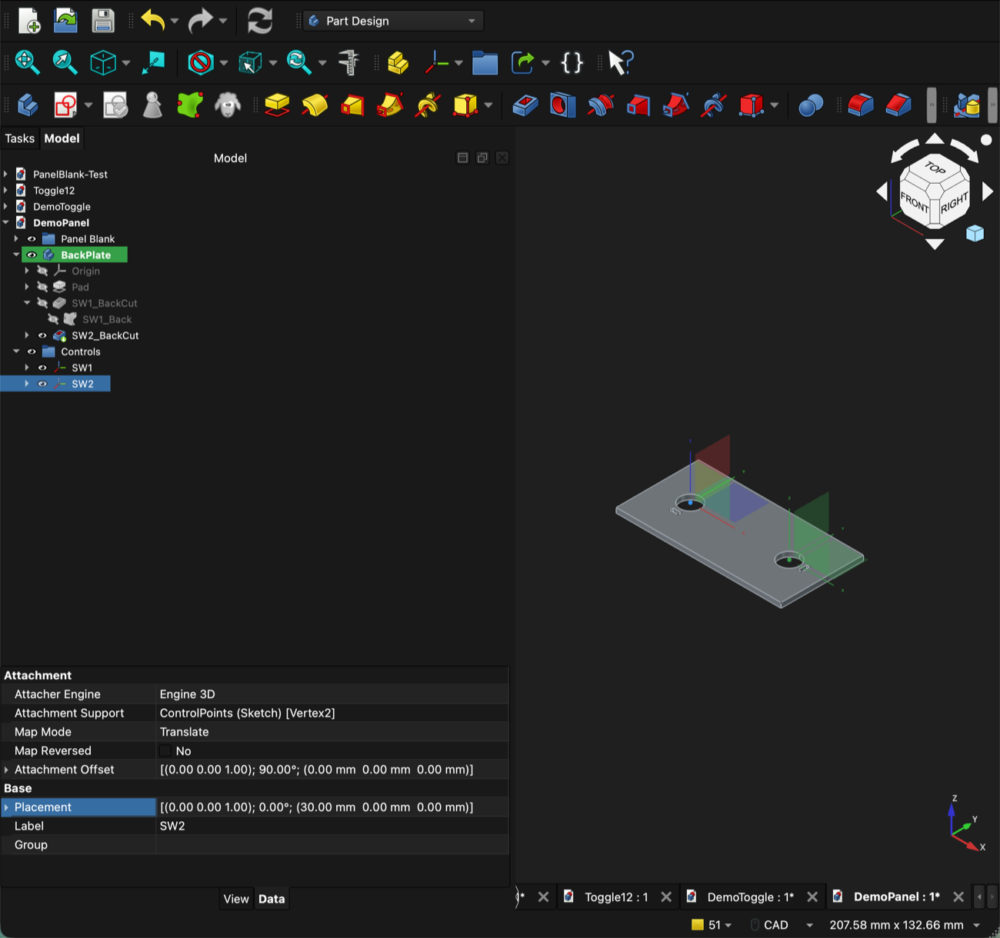
Gotchas
- Translate origin ignores the offset rotation. This is the big one. The LCS applies
the Attachment Offset translation but drops its rotation. Vertex-only references
support no other attachment mode. So the binder expression takes the position from the
LCS and the rotation from the offset:
placement(SWn.Placement.Base; SWn.AttachmentOffset.Rotation). PlainSWn.Placementnever rotates. - The binder has no Attachment. A Sub-Shape Binder can't be attached in 1.1.1, so the Placement expression is how it gets positioned.
- The binder lands in the wrong file or at the document root. That happens when the library document was active or no body was active. Delete it and redo step 4.1 with the panel active and the body double-clicked. If it appears at the root, drag it into the body.
- You can't pick a sketch point. Points are drawn tiny and the plates cover Z=0.
Raise Preferences → Display → 3D View → Pick radius to about 10 px, or just type
Sketch:VertexNinto the attachment field. - Clicks become references. While the attachment panel shows "Selecting…", every
click in the tree or the 3D view is added as a reference. A bad click leaves the LCS
invalid (red
!). Re-open it and re-type the reference. - Don't move the body, stack plates with the Pad. The binder compensates for its container's placement, so moving the Body leaves the cutouts behind. Set the plate's Z position on the Pad (Reversed) and leave the Body placement alone.
=doesn't open the expression editor. It only works while a value is being edited. Use right-click → Expression….- "Save dependent files?" means the linked library has unsaved edits. Answer No unless you changed the library deliberately.
- No live rotation preview. The cutout updates when you recompute (Ctrl+R) after you change the angle.
- The library doesn't need to be open. Opening the panel loads the linked library automatically.
- Library edits show up on recompute. After you edit and save a library sketch, the panel's binders are marked as changed the next time the panel opens. Press Ctrl+R to update the cutouts.
- A renamed or moved library fails quietly. The panel still opens and the cutouts keep
their last shape. The tree shows no error. The only sign is a red
Link not restoredline in the Report view. Put the file back under its old name and the link returns, even if you saved the panel while the link was broken. Check the Report view after any rename or move inCAD/Shared/Cutouts/.
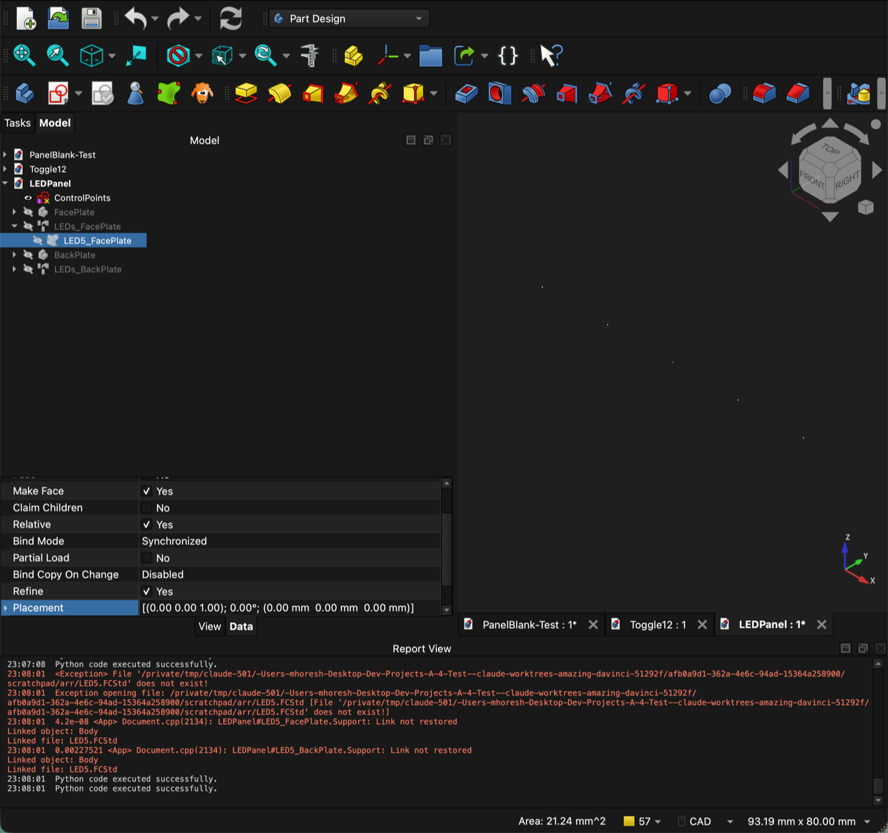
Array placement for identical, unrotated controls
One LCS per control gives each control its own rotation, but it costs an LCS, a binder and a pocket per control per layer. For a row or grid of identical controls that never rotate, such as indicator LEDs, a Draft Point Array over a points sketch places every copy at once. Each layer needs one array and one pocket, however many controls there are.
The screenshots come from a second demo: an LED5 library part (FacePlate Ø5.2, BackPlate
Ø6.0) and a 100 × 30 mm panel with a row of five LEDs.
When to use which
| LCS per control | Point array | |
|---|---|---|
| Rotation | Each control has its own | All copies share one orientation |
| Objects for N controls, 2 layers | N LCS + 2N binders + 2N pockets | 2 arrays + 4 binders + 2 pockets, whatever N is |
| Add a control | Add a point, an LCS, then a binder and pocket per layer | Add a point |
| Remove a control | Delete its objects, but keep its point (LCSs bind by index) | Delete the point |
| KiCad reference in the tree | Yes (the LCS label) | No, the points are anonymous |
| Parts per placement | Any part | One library part per array |
| Workbenches | Part Design | Part Design + Draft |
Use an array for banks of identical, unrotated controls such as LED rows, annunciator lamps and push-button banks. Use LCS per control when a control rotates, or when you want its KiCad reference visible in the tree. One panel can use both.
How the pieces fit
CAD/Shared/Cutouts/LED5.FCStd ← library part
└── Body
├── FacePlate (sketch: Ø5.2 hole)
└── BackPlate (sketch: Ø6.0 hole)
<panel>.FCStd
├── LED_Points (sketch: one point per LED, nothing else)
├── LEDs_FacePlate (Draft PointArray over LED_Points)
│ └── LED5_FacePlate (root binder → LED5 FacePlate sketch)
├── LEDs_BackPlate (Draft PointArray over LED_Points)
│ └── LED5_BackPlate (root binder → LED5 BackPlate sketch)
├── FacePlate (Body)
│ └── … LEDsCutFacePlate (Pocket) ← LEDsBinderFacePlate (binder → LEDs_FacePlate)
└── BackPlate (Body)
└── … LEDsCutBackPlate (Pocket) ← LEDsBinderBackPlate (binder → LEDs_BackPlate)
The array copies the binder once per point in the points sketch. A second binder carries the arrayed shape into the plate body, where it's pocketed. You don't need a Placement expression, because the array already puts every copy in place.
Recipe
1. Library part
Same as step 1 above. Draw one sketch per layer, centred on the
origin, and save the file in CAD/Shared/Cutouts/.
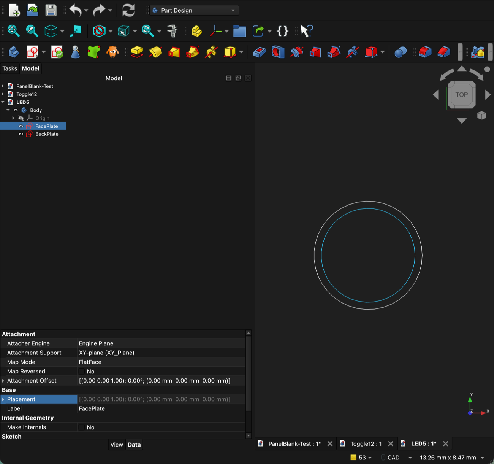
2. Points sketch
- In the panel, create a sketch (here
LED_Points) with one Point per LED. - Put only this array's points in it. The array places a copy on every vertex in the sketch, so a shared ControlPoints sketch would also put LEDs on your toggles.
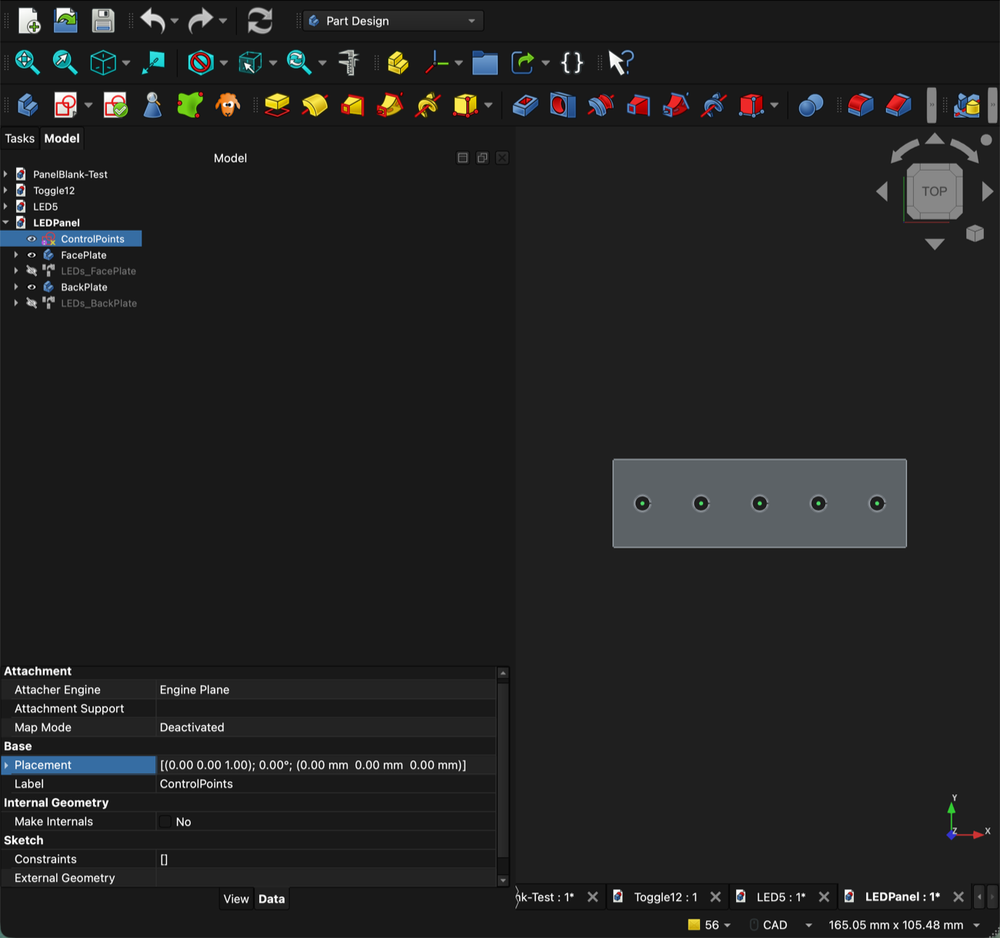
3. Root binder (one per layer)
- Make the panel the active document, with no body active, and select nothing.
- Part Design → Create a sub-object(s) shape binder. With no active body, the binder lands at the document root.
- Drag the library's layer sketch (
FacePlate) onto it, the same way as in step 4.3 above. Leave its Placement alone.
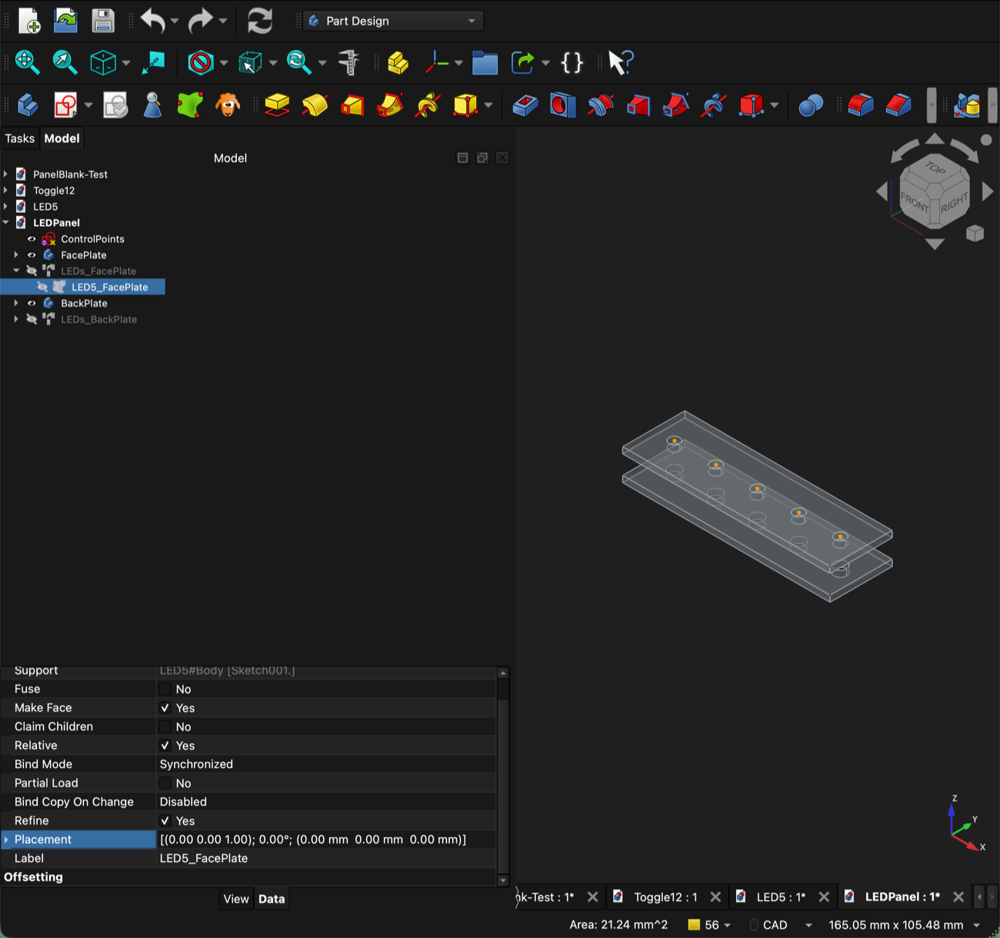
4. Point array (one per layer)
- Switch to the Draft workbench. Select the root binder, then Ctrl-click
LED_Points. - Modification → Array tools → Point array.
- Check the array's properties: Base is the binder, Point Object is
LED_Points, and Count matches the number of points. Rename the array (LEDs_FacePlate).
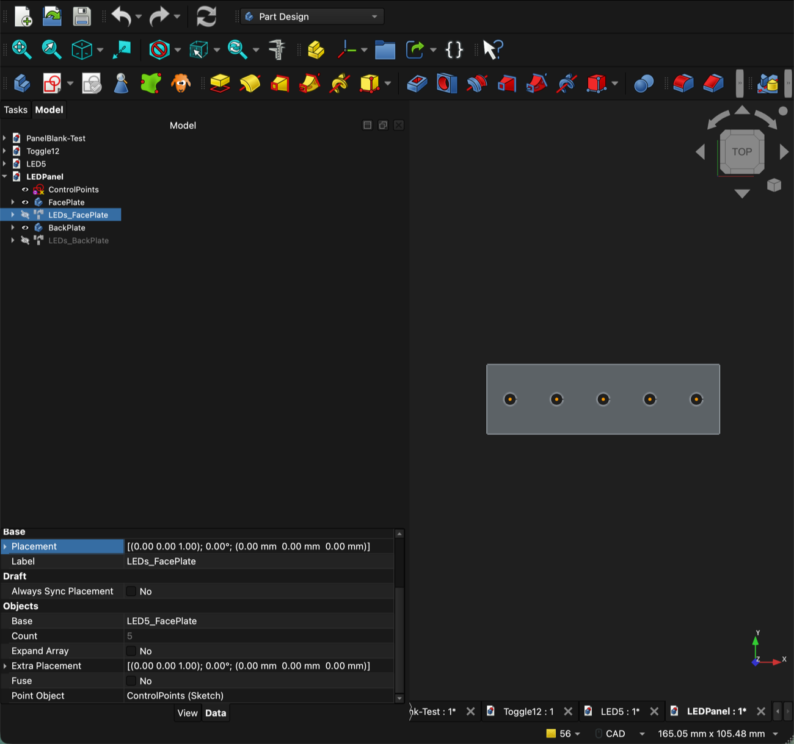
5. Bind and cut
- Back in Part Design, double-click the plate Body so it's active, then select nothing.
- Create a sub-shape binder, then drag the array (
LEDs_FacePlate) onto it. - With the binder selected, run Pocket: Mode Symmetric, Type Through all.
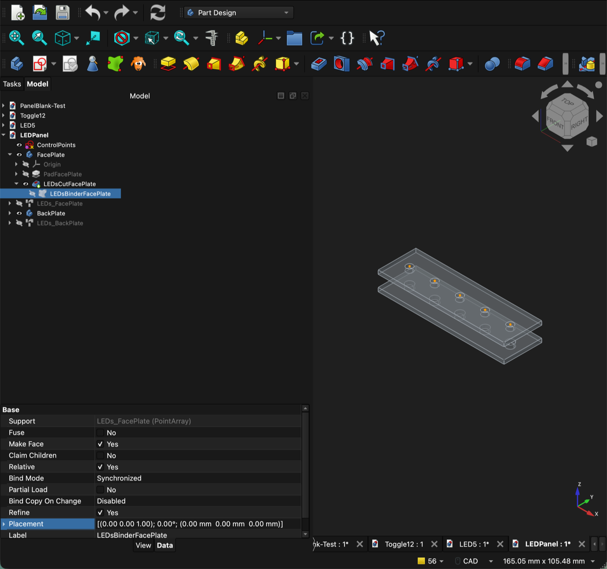
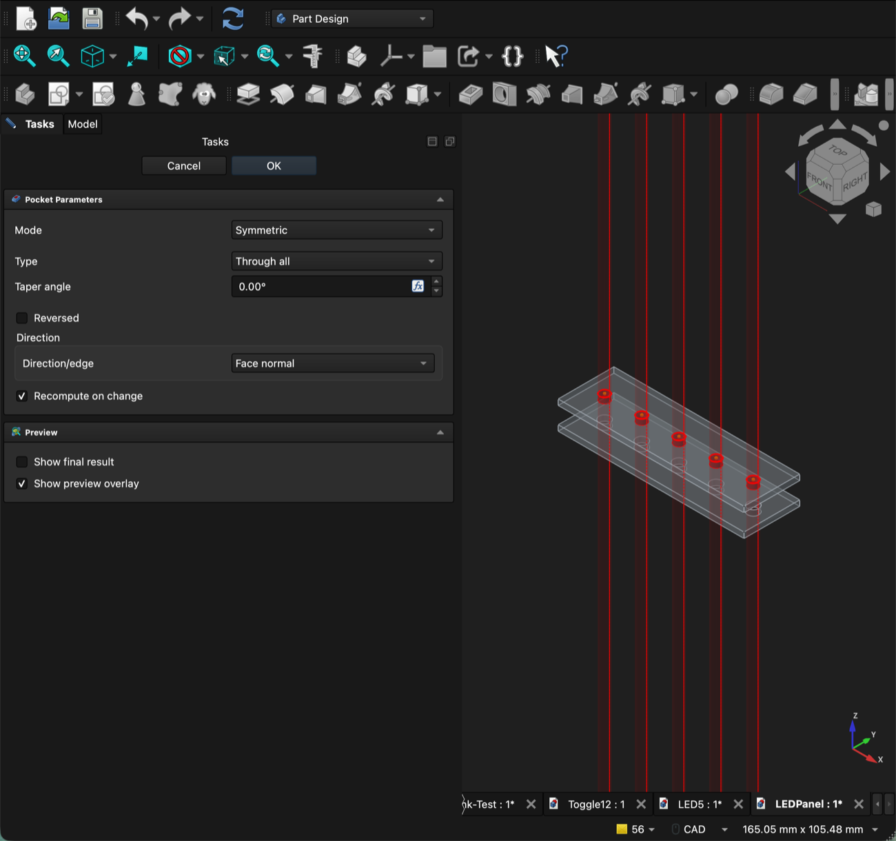
Repeat steps 3–5 for the BackPlate layer, with a second root binder on the library's
BackPlate sketch and a second array over the same LED_Points.
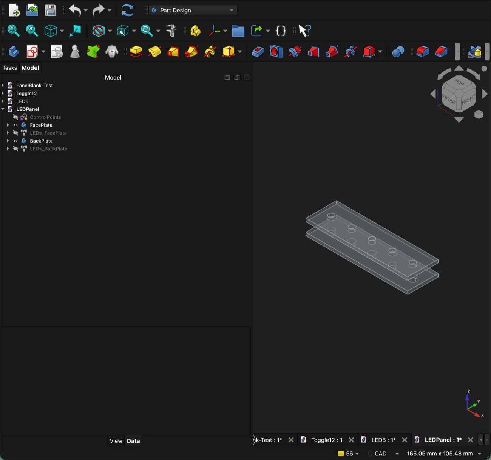
Array gotchas
- One points sketch per array. Every vertex becomes a copy, and that includes the endpoints of any normal line. Construction geometry is ignored. Keep each array's points in a sketch of its own.
- All copies share one orientation. The array's Extra Placement rotates every copy the same way. A control that needs its own angle belongs in the LCS recipe.
- Deleting a point is safe here. The array has no per-index links, so adding, moving or deleting points just changes the copies. This is the opposite of the LCS rule.
Related
-
334: the blank-panel generator.
- Mechanical standards: Dzus grid and mounting holes for the panel blank.